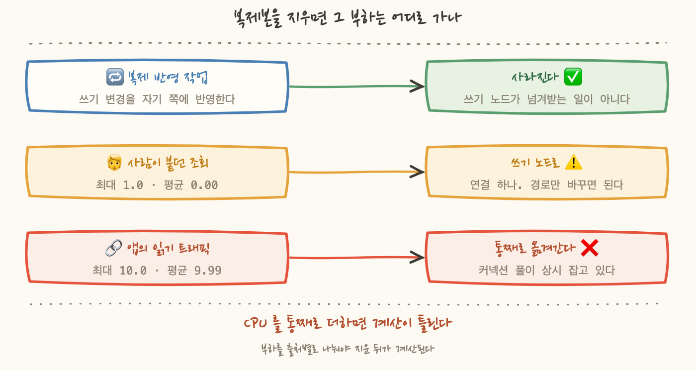
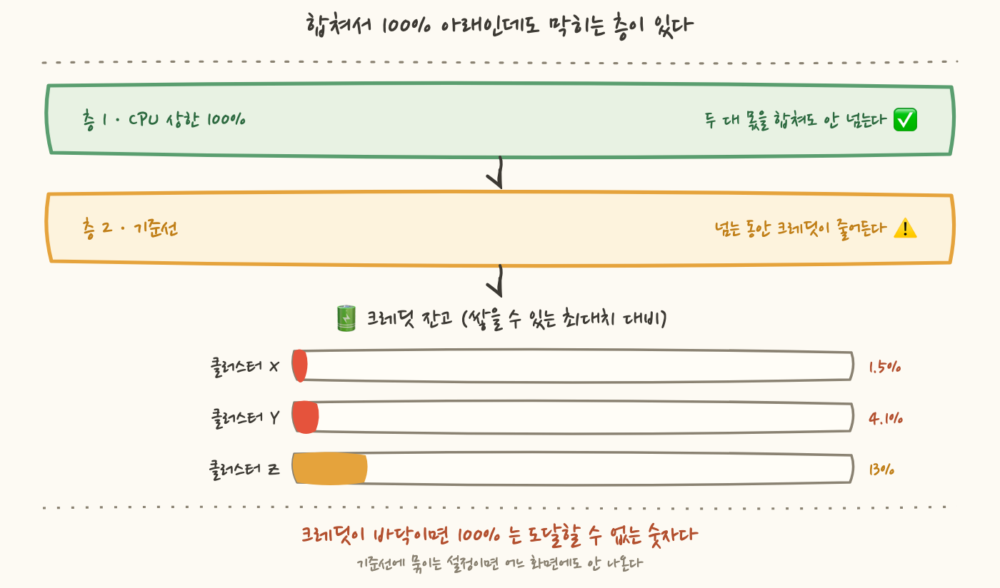

계획서에 이런 줄이 있었어요. "관계형 데이터베이스 클러스터의 읽기 복제본을 줄인다. 후보 여섯 대." 그중 둘에는 괄호까지 붙어 있었습니다. "연결 평균 0.0, 확실함."
여기서 말하는 클러스터는 쓰기를 받는 노드 하나와, 그 변경을 받아 읽기만 처리하는 복제본 여러 대로 이루어진 구성이에요. 계획서가 줄이자고 한 것은 뒤쪽입니다.
확실하다고 적힌 줄부터 다시 열었습니다. 그리고 이날 조사가 끝났을 때 여섯 대 중 열린 것은 한 대였고, 나머지 다섯 대 중 두 대는 절감 목록에서 증설 검토 목록으로 옮겨갔어요. 열렸다는 것은 지웠다는 뜻이 아니라 지워도 되는지에 대한 판정이 닫혔다는 뜻입니다. 지우는 것은 그다음 일이에요.
이 글은 읽기 복제본 한 대를 지워도 되는지를 판정하는 데 층이 몇 개나 있었는지에 대한 기록입니다. 지우려던 것을 못 지운 이야기이자, 절감 조사를 하다가 그 반대쪽 신호를 주워온 이야기예요.
"연결 평균 0.0" 이라고 적힌 두 대부터 봤습니다. 그 숫자의 출처는 90일 평균이었어요. 기간을 14일로 좁히고 통계를 최댓값으로 바꿔서 다시 쟀습니다.
평균은 그대로였는데 최대가 0 이 아니었어요. 평균 0.00 은 "거의 항상 0"이지 "한 번도 없음"이 아닙니다. 무엇이 붙었나 확인해보니 사람이 조회 도구로 접속한 흔적이었어요. 애플리케이션 트래픽은 아니지만 지우면 그 경로가 끊깁니다.
여기까지는 새로 할 말이 없습니다. 4편이 "0 을 유휴의 증거로 쓰지 말라"였고 5편이 "평균은 두 극단을 동시에 지운 값"이었으니까요. 제가 이 시리즈에서 이미 두 번 쓴 것입니다. 그런데 두 번 쓰고도 같은 자리에 다시 걸렸어요.
그래서 이 장에서 볼 것은 "평균을 보지 마라"가 아니라 왜 그 규칙이 이번에 안 걸렸나입니다. 처음엔 규칙을 사건 이름 밑에 적어둬서라고 생각했어요. 4편은 유휴 판정, 5편은 사이징 판정, 이번은 제거 판정이니 이름이 달라서 안 따라온 거라고요. 그런데 5편을 다시 열어보니 그렇지 않았습니다.
규칙은 지표를 여는 사람에게 붙어 있었는데 이번에 저는 읽는 사람이었어요. 계획서에 적힌 괄호를 그대로 믿고 시작했고, 그 괄호가 어떤 기간에 어떤 통계로 만들어진 숫자인지는 계획서에 없었습니다. 통계를 고르는 규칙은 고를 일이 있어야 작동하는데, 남이 이미 골라준 숫자를 받으면 고를 일 자체가 사라져요.
그러니까 이 장의 결론은 규칙을 어디에 붙이느냐가 아니라 그 숫자가 어디서 왔느냐입니다. 내가 연 숫자에는 기간과 통계가 딸려 오지만 남이 적어준 숫자에는 값만 남아요. 그래서 계획서에 숫자를 적을 때는 그 숫자의 기간과 통계를 함께 적어야 다음 사람이 다시 열어볼 수 있습니다. "연결 평균 0.0" 은 그 자체로는 검증할 수 없는 문장이에요.
여기서부터가 이 글의 새로운 지점이에요. 후보 A 를 보다가 숫자 두 개가 나란히 안 맞는 걸 발견했습니다.
처음엔 제가 지표를 잘못 골랐나 싶었어요. 그런데 아니었습니다. 읽기 복제본은 쿼리를 하나도 안 받아도 CPU 를 씁니다. 쓰기 노드에서 일어난 변경을 계속 받아서 자기 쪽에 반영해야 하니까요. 스토리지를 공유하지 않는 구조면 변경 로그를 받아 자기 데이터에 다시 쓰는 일이고, 공유하는 구조면 데이터를 다시 쓰지는 않고 자기 캐시를 갱신하는 일이 됩니다. 하는 일의 무게는 다르지만 어느 쪽이든 그 CPU 는 복제본 쪽에서 나갑니다. 읽기 요청이 0 이어도 쓰기가 있으면 복제본은 일해요.
이 사실 자체는 아는 이야기인데, 제거 판정에서는 이게 결정적입니다. 왜냐하면 "이 복제본을 지우면 그 부하는 어디로 가나" 라는 질문의 답이 부하 종류마다 다르기 때문이에요.
정리하면 이렇게 갈립니다.
그러니까 후보 A 의 CPU 13.8% 를 통째로 쓰기 노드에 더하면 계산이 틀립니다. 그 13.8% 는 복제본이 존재하기 때문에 생긴 일이에요. 변경을 따라가는 일이든 그 인스턴스가 떠 있어서 도는 기본 작업이든, 복제본이 없어지면 그 일도 같이 없어집니다. 쓰기 노드로 넘어가는 것은 사람이 붙던 연결 하나뿐이었어요.
13.8% 안에서 그 둘이 각각 얼마인지는 이 지표만으로 못 가릅니다. 다만 이번 판단에 그 구분은 필요하지 않았어요. 물어야 할 것은 "이 값이 쓰기 노드로 넘어가는가" 하나였고 둘 다 안 넘어갑니다.
이건 방향이 좋은 소식입니다. 제거의 부담이 생각보다 작다는 뜻이니까요. 그런데 반대 방향으로도 읽어야 해요. 부하의 출처를 안 나누면 계산이 양쪽으로 다 틀립니다. 통째로 더하면 못 지울 것을 못 지우고, 통째로 무시하면 지우면 안 될 것을 지웁니다. 후보 A 는 앞쪽이었고 뒤에 나올 클러스터 Y 는 뒤쪽이 될 뻔했어요.

부하의 출처를 나눴으니 다음 질문은 자연스럽게 이겁니다. "옮겨간 부하를 쓰기 노드 한 대가 감당하나."
보통은 CPU 사용률로 답합니다. 지금 쓰기 노드가 몇 퍼센트를 쓰고 있고 옮겨올 몫이 몇 퍼센트니까 합쳐도 100% 아래다, 통과. 이렇게요.
그런데 이 클러스터들은 버스터블 계열이었습니다. 평소에는 낮게 쓰다가 필요할 때만 잠깐 몰아 쓰라고 만든 요금 모델이에요. 여기서는 앞의 계산이 통과해도 끝이 아닙니다. 질문이 두 층입니다.
기준선은 그 클래스가 상시로 낼 수 있는 CPU 성능의 몫입니다. 버스터블 계열은 그만큼이 늘 보장되고 그 위로 올려 쓰는 동안은 크레딧을 꺼내 써요. 기준선 아래로 쓰면 크레딧이 쌓입니다. 그러니까 기준선을 넘겨 쓰는 것 자체는 정상 동작이에요. 그렇게 쓰라고 있는 요금 모델이니까요.
문제는 크레딧이 유한하다는 것입니다. 잔고가 0 이 되면 그다음에 무엇이 일어나는지는 인스턴스 설정에 따라 갈려요. 기준선 위로 못 올라가고 거기 묶이거나, 넘겨 쓴 만큼 추가 요금이 붙거나 둘 중 하나입니다. 앞쪽이면 증상이 느려짐으로 나옵니다. 뒤쪽이면 청구서로 나와요. 그래서 크레딧 잔고를 열었으면 이 설정도 함께 봐야 합니다. 잔고가 같은 두 인스턴스가 서로 다른 방식으로 아플 수 있어요.
기준선에 묶이는 쪽일 때 CPU 사용률 그래프는 어떻게 보일까요. 기준선 근처에서 평평하게 붙어 있습니다. 100% 를 안 칩니다. 그래프만 보면 여유가 있어 보여요.
그래서 두 번째 층은 첫 번째 층의 화면에 안 나타납니다. 확인하려면 크레딧 잔고라는 다른 지표를 따로 열어야 해요. 이게 5편에서 다룬 "다른 질문에 답하는 숫자" 와는 조금 다른 모양입니다. 5편은 같은 지표를 다른 통계나 다른 차원으로 열어서 답이 뒤집힌 이야기였는데, 여기서는 지표를 아무리 다르게 열어도 안 나옵니다. 볼 지표가 아예 하나 더 있어야 해요.
그래서 클러스터별로 크레딧 잔고를 쟀습니다. 이 조사에서 제일 오래 들여다본 표예요.
잔고를 절대값이 아니라 비율로 적은 것이 이 표의 전부입니다. 크레딧은 몇 점이 큰 값인지가 클래스마다 달라서 숫자 자체로는 아무 말도 못 해요. 쌓을 수 있는 최대치로 나눠야 비로소 문장이 됩니다. 상시 한 자릿수 퍼센트라는 것은, 크레딧을 벌어서 모으는 게 아니라 버는 족족 쓰고 있다는 뜻입니다.
이 상태에서 복제본을 지우면 어떻게 되는지 계산해봤어요. 쓰기 노드가 지금보다 더 많은 부하를 받고, 기준선을 더 자주 넘기고, 얼마 없는 잔고가 더 빨리 0 에 닿습니다. 그다음은 앞 장에서 갈라둔 두 갈래인데, 기준선에 묶이는 쪽이면 그때 나타나는 증상은 CPU 그래프의 이상이 아니라 쿼리 지연이에요. 아래 이야기는 그쪽을 전제로 씁니다. 어느 쪽인지는 설정을 열어봐야 알 수 있고 그것도 이 표와 함께 확인할 값입니다.
그러니까 결론이 이렇게 뒤집혔습니다. 이 클러스터들은 절감 대상이 아니라 증설을 검토해야 할 곳이었어요.
크레딧이 상시 바닥이라는 것은 그 자체로 하나의 문장입니다. 지금 붙어 있는 클래스가 이 부하를 상시로는 못 받고 있다는 뜻이에요. 버스트로 메우고 있는 겁니다. 지금 당장 장애는 아니고 그래서 알람도 안 울립니다. 다만 여유가 없어요.
그리고 이 발견이 어디서 나왔는지를 짚어두고 싶어요. 절감 조사입니다. 크레딧을 보러 간 게 아니에요. 지워도 되는지를 보러 갔다가 주웠어요. 11편에서 도메인 둘이 죽은 곳을 가리키고 있던 것을 정리 작업에서 발견한 것과 같은 모양입니다.
왜 다른 자리에서는 안 나왔을까요. 청구서에는 안 보입니다. 기준선에 묶이는 설정이라면 크레딧을 다 쓴 인스턴스나 가득 쌓인 인스턴스나 청구액이 같아요. 추가 요금이 붙는 설정이라면 청구서에 나오기는 하는데 그때는 이미 넘겨 쓴 뒤입니다. 알람에서도 안 나옵니다. CPU 는 기준선 근처에서 평평하니 임계를 안 칩니다. 그래서 이 상태를 발견할 수 있는 자리는 누군가 그 클러스터를 손대려고 열어보는 순간뿐이에요.

클러스터 Y 의 복제본을 볼 차례였습니다. 여기서 숫자 하나가 눈에 걸렸어요.
둘 다 "연결 수" 라는 같은 지표이고 둘 다 두 자릿수 아래의 작은 값입니다. 그런데 모양이 완전히 달라요.
Y 쪽은 최대와 평균이 거의 붙어 있습니다. 값이 흔들리지 않고 계속 그 자리에 있다는 뜻이에요. 접속이 있었다 없었다 하면 평균이 최대보다 한참 아래로 내려가는데 그러지 않았습니다. 이건 커넥션 풀이 상시 유지되고 있는 모양입니다. 애플리케이션이 읽기 엔드포인트를 실제로 쓰고 있고 풀 크기만큼 연결을 잡아두고 있는 거예요.
Z 쪽은 반대입니다. 평균이 0.00 인데 최대가 1.0 이면 대부분의 시간에 아무도 없다가 아주 가끔 하나가 붙는 모양이에요. 사람이 조회 도구로 접속하는 흔적입니다. 1장에서 "연결 평균 0.0" 이라고 적혀 있던 두 대 중 하나가 이 복제본이었어요.
이 복제본은 자기 크레딧도 이미 0 이었습니다. 붙는 연결이 거의 없는데도 그랬다는 것은, 2장에서 본 복제 반영 작업만으로도 기준선을 상시 넘기고 있었다는 뜻이에요. 남겨둘 이유가 하나 더 줄어듭니다.
그러면 제거의 결과가 갈립니다. Y 의 복제본을 지우면 그 풀이 통째로 쓰기 노드로 옮겨가요. 그 쓰기 노드는 이미 크레딧이 4.1% 인 상태입니다. Z 의 복제본을 지우면 사람 한 명의 접속 경로만 바꾸면 됩니다.
여기서 제가 새로 배운 것은 이겁니다. 연결 수를 볼 때 봐야 하는 것은 값의 크기가 아니라 최대와 평균 사이의 간격이에요. 두 값이 붙어 있으면 상시 부하이고 벌어져 있으면 간헐 접속입니다. 그리고 그 판정은 값이 크냐 작냐와 무관합니다. 10 은 작은 숫자지만 상시 10 이면 옮길 수 없는 부하예요. 최대 1 은 아주 작은 숫자지만 옮기면 그만입니다.
4편은 "0 이냐 아니냐" 를 다뤘고 5편은 "어느 극단을 볼 것이냐" 를 다뤘습니다. 이번 것은 그 둘과 다릅니다. 두 통계를 하나씩 보는 게 아니라 나란히 놓고 그 간격을 읽는 것이에요. 어느 한쪽만 보면 이 정보가 안 나옵니다. 최대만 보면 10 과 1 의 차이만 보이고, 평균만 보면 9.99 와 0.00 의 차이만 보여요. 둘을 같이 놓아야 모양이 나옵니다.
최종 판정입니다. 후보를 하나씩 닫으니 이렇게 갈렸어요. 같은 이유로 막힌 것은 한 줄로 묶었습니다.
막힌 이유가 전부 다르다는 점이 이 표의 핵심이에요. 크레딧, 커넥션 풀, 요금 모델, 부하 주기. 하나의 검사로 다 걸러지지 않습니다.
맨 아래 줄은 1장에서 "확실함" 이라고 적혀 있던 두 대 중 나머지 하나입니다. Z 와 판정 경로가 같은데 결론이 갈렸어요. 붙는 것은 같은 조회 도구인데 접속 빈도가 세 배였습니다. 같은 조치로 열릴 자리인 것은 맞지만, 경로를 옮겼을 때 무엇이 따라오는지를 Z 에서 먼저 보고 판단하기로 했습니다. 같은 이유로 열리는 자리라도 순서를 두면 하나는 검증이 되고 하나는 그 결과를 받습니다.
그리고 맨 위 줄도 아직 조치가 아닙니다. "지워도 된다" 는 판정이지 실행이 아니에요. 조회 경로를 옮기는 일이 먼저 있고 그게 끝나야 지우는 순서가 옵니다.
네 번째 줄은 판정의 축이 다릅니다. 못 지운다는 뜻이 아니라 지워도 요금이 안 빠진다는 뜻이에요. 예약은 일정 기간 쓰겠다고 미리 약정하고 할인받는 요금 모델인데, 그 약정이 이 자리를 덮고 있으면 끄는 것과 요금이 무관해집니다. 자원을 지우는 것과 돈이 줄어드는 것은 다른 사건이에요. 이 이야기는 다음 편에서 이어집니다.
다섯 번째 줄은 통계가 아니라 지속 시간으로 걸렸습니다. CPU 20% 초과가 90일 중 24일이면 최댓값 하나짜리 봉우리가 아니에요. 5편에서 "최고값은 판정이 아니라 더 볼 이유" 라고 적었는데 더 봤더니 정기 부하였던 경우입니다. 사분의 일에 해당하는 날들에 그랬으니 특정 요일이나 특정 배치일 가능성이 높아요. 그 부하가 어디로 갈지를 모른 채로는 못 지웁니다.
그래서 계획서에 적혀 있던 금액 중 실제로 남은 것은 오분의 일 남짓이었습니다. 여기서 8편이 떠올랐어요. 그날 확보한 절감액이 0 이었던 편입니다.
그런데 이번엔 다르게 적고 싶은 게 있습니다. 계획서의 숫자가 줄어든 것이 아니라 애초에 그 숫자가 판정 전의 숫자였어요. 계획서에 적힌 여섯 대는 "지울 수 있는 여섯 대" 가 아니라 "지울 수 있는지 확인해볼 여섯 대" 였습니다. 두 문장이 같은 표에 같은 모양으로 적혀 있었던 게 문제예요.
여섯 줄이 다 필요했습니다. 하나라도 안 봤으면 다른 결론이 나왔어요. 특히 세 번째 줄을 안 봤으면 절감이랍시고 크레딧이 바닥인 클러스터에서 복제본을 뺐을 겁니다. 그러면 절감액은 조금 생기고 얼마 뒤에 쿼리 지연이 시작됐겠죠. 그 둘이 연결되기까지는 시간이 꽤 걸렸을 거예요.
절감 조사가 실제로 하는 일은 그래서 줄일 것을 찾는 게 아니라 각 항목이 왜 지금 그 크기인지를 알아내는 일에 가깝습니다. 알아내다 보면 줄일 수 있는 게 나오고 가끔은 반대쪽이 나와요. 이번엔 반대쪽이 둘 나왔습니다.